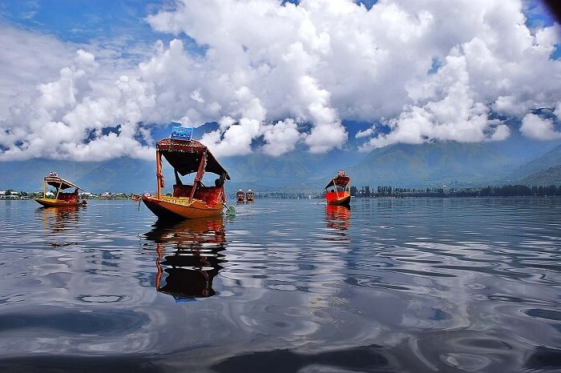

JAMMU & KASHMIR
Tour Itinerary
Day 1: Transfer from Jammu to Patnitop

- Arrive at the Jammu airport or railway station.
- Meet with the representatives.
- Drive to Patnitop.
- Check in to the hotel and get settled in.
- Enjoy the evening at leisure.
- Overnight stay at the hotel.
Day 2: Transfer to Srinagar

- After breakfast, drive to Srinagar.
- Check in to the hotel and get settled in.
- Enjoy the evening at leisure exploring the city.
- Overnight stay at the hotel.
Day 3: Trip to Sonamarg

- After breakfast, proceed for a full-day excursion to Sonamarg.
- Enjoy the drive through a scenic route.
- You may take a pony ride (at your own cost) to Thajiwas Glacier where snow remains round the year.
- Evening back to Srinagar.
- Overnight stay in the hotel
Day 4: Exploring Srinagar

- After breakfast, leave to explore Srinagar.
- Visit the famous Mughal Garden, Nishat Bagh, Shalimar Bagh, Shankaracharya Temple, Pari Mahal and Hazratbal Shrine.
- Overnight stay in the hotel
Day 5: Transfer to Gulmarg
- After breakfast, leave for Gulmarg.
- Enjoy the scenic drive.
- Check in to the hotel and get settled in.
- Board the Gondola cable car system (the 08 minutes ropeway).
- Descend back to Gulmarg after an hour and later indulge in some horse-riding.
- Overnight stay at the hotel in Gulmarg.
Day 6: Transfer to Pahalgam
- After breakfast, drive to Pahalgam via Pampore, Avantipura and the village of Bijbehara.
- Enjoy the scenic route as we drive parallel to the Lidder River flowing from the opposite direction.
- Arrival in Pahalgam.
- Check in to the hotel and get settled in.
- Spend the rest of the day at leisure.
- Overnight stay at the hotel in Pahalgam.
Day 7: Departure to Jammu
- After your breakfast, leave for Jammu.
- Drop off at the airport/railway station upon choice.